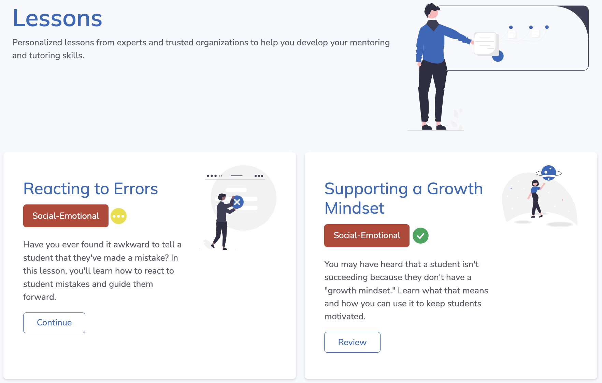

Here are the latest updates and changes we've made to the PLUS app! We've added content in the form of four new lessons, made some tweaks to the Lesson page navigation for efficiency and convenience, and added feature updates including saving progress and state for lessons.
These changes are visible on the website and app, aiming to improve overall user experience in terms of ease of use and clarity.
Important Note: As part of this release, in order to enable lesson saving, we had to delete all previous records. If you have completed any of the lessons prior to 07/26/22, they may be marked as incomplete and you will need to complete them again to show them marked as completed.
We've designed and released four new modules for PLUS Lessons:
When lessons are partially completed and not yet submitted, a pending symbol (a yellow circle with three white dots) is displayed and all text and choice selections are saved. As a result, users can now leave lessons unfinished and pick them up from where they left them. Moreover, Lessons will now be marked as 'completed' and can be reviewed post-completion.

Lessons now have a title page with clear Lesson Objectives
Lesson consent now persists (is saved) across lessons so you don't have to give consent each time
Lesson progress bars are displayed for each respective lesson, formatting and UI have been improved and progress bars update when returning to a lesson. You can also now click on the progress bar indicator to jump to that page if it has been completed.
User metadata is recorded for tech improvements
Lesson descriptions and images have been updated
Minor improvements to existing lesson text
Pinned Resources button moved to appear on each SMART competency area page, allowing for filtering of all resources, across competencies.
Minor improvements to Tutoring Strategies including upgraded images and per-resource grade assignments.